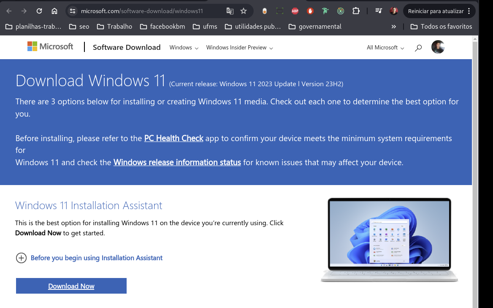
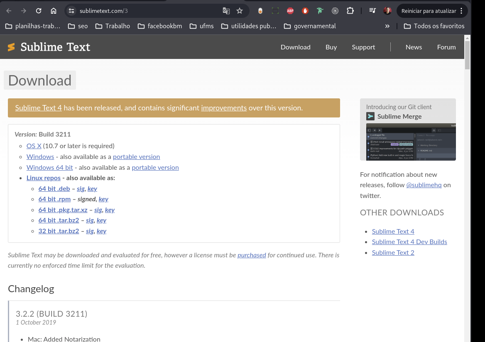
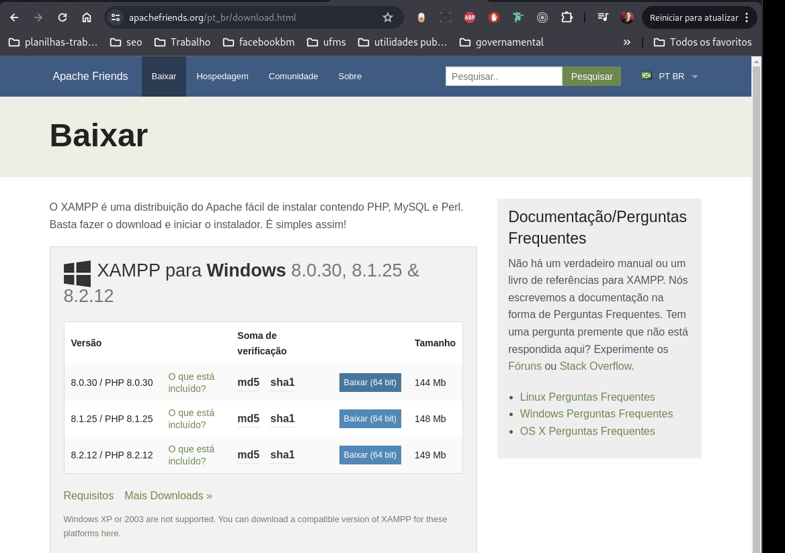

Disciplinas
FUNDAMENTOS DE WEB-T01-2024-1. Concluído
Materiais
Vídeo 3 - Fundamentos de Internet e Web - Desenvolvimento de páginas Web com HTML5 e CSS - Parte 2. sendProf° ministrante: Júlio Cezar Estrela. (UNIVESP)
Conteúdo
FUNDAMENTOS DE INTERNET E WEB.
Desenvolvimento de páginas Web com HTML5 e CSS.
- ROTEIRO
- Parte 1
- Descrição da atividade
- Componentes necessários
- Windows, Apache Web Server, Sublime, HTML, CSS
- Download dos Componentes
- Parte 2
- Instalação e Configuração
- Parte 3
- Desenvolvimento
- Testes
Instalação.
- O que vamos precisar para esta aula?
- Sistemas Operacional.
- Windows: Onde executará o servidor Web. → 
- Um editor de Texto.
- Sublime: para codificar o conteúdo da página HTML. → 
- Um navegador Web.
- Chrome: para fazer requisições ao conjunto de páginas hospedadas no servidor Web. →
- Um servidor Web local
- Apache: que armazena as páginas que serão requisitadas quando utilizarmos o browser para obter informações contidas nas páginas. → 
Referências.
- Desenvolvimento de Software II: Introdução ao Desenvolvimento Web com HTML, CSS, JavaScript e PHP. 2014.
- https://www.sublimetext.com/
- https://www.google.com/intl/pt-BR/chrome/
- https://www.apachefriends.org/pt br/index.ht ml